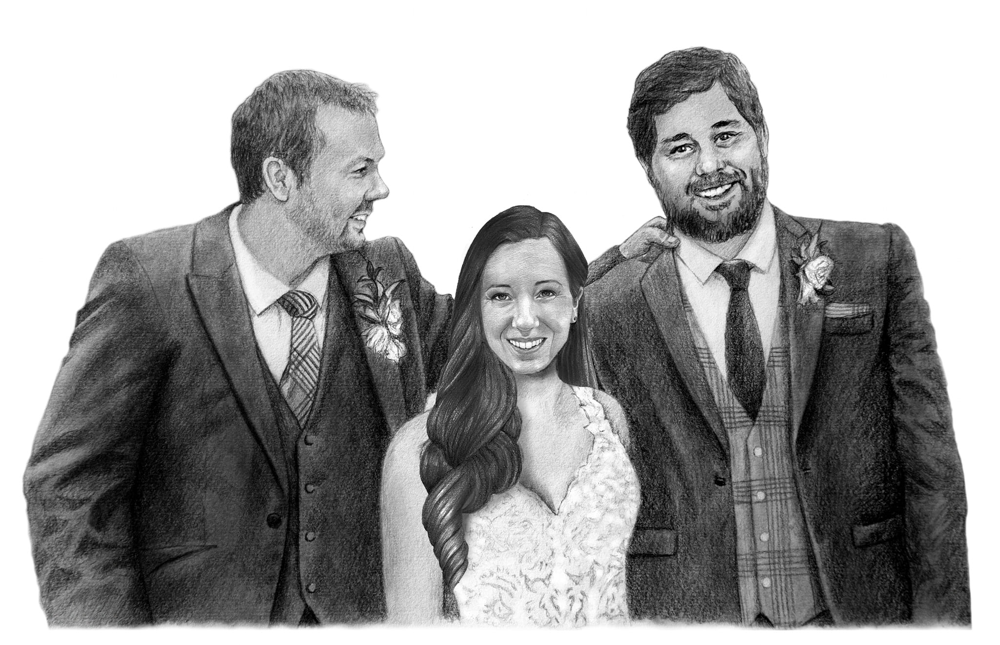

- What my life consists of at this moment in time is all about being a Stepdad and a husband. Learning to lead by example to my stepkids and at the same time trying to better myself for my family! Becoming a husband has been no easy task as well and I will give a little back story to this. My wife is the sister to my childhood best friend! Like the best friend that is above all other friends that you have ever met in your life! We all grew up together on the same street from birth and had years of fun and mayham running our childhood neighborhood! We grew older and we each had our on moments in life that we shared with one another! To this day I still remember Derick's sister coming home for the first time and a rivalry was born. It was Derick and I against this little ball of cuteness that had no idea what we had planned for her growing up.
- Fast forward to 2018, that's when my world was changed forever! Derick was diagnosed with stomach cancer and life was cruel and took my friend from me! Just like that my best friend was gone. 36 years of having a best friend that you share everything with was hard to let go! Until that moment in time I was always a carefree, come and go, type person! It was hard letting go of Derick and even harder to be around his family! His mom and dad where my mom and dad. His sister was my sister! HIs grandparents where my grandparents. I found myself hiding from them over the years that followed and just found it easier to stay away because the site of me could trigger a feeling for their son and make them remeber what they had lost. I become focused on my job and shut as many people as I could out! I just didn't want anyone to see me hurt! Then life came a knocking again at the end of 2020.
- Lindsey, derick's sister, had just moved into the same town I was staying in. Not for me but beacuse her family was there and she was going through a divorce and had moved close to her family to start over. So our paths crossed one evening at a cookout Derick's dad was throwing for family and close friends. these cookouts where legenadary. Denis, Derick's dad, would throw these cookouts every year and was no short of an incredible atmosphere. After Derick's passing these cookouts became smaller and focused on close family. I have skipped on a few of these over those years but this night, for some reason, I went. Almost like something was pulling me to this cookout. I even stopped a few times on the way there and tried talking myself out of going, but in the end I was there before I knew it. Once I was there, so many people came up to thank me for coming and it was good to see so many I had hid from. Then I heard a voice calling my name and this voice I knew instantly who it was. Granted it had been years since we have seen each other and it felt like we haven;t skipped a beat since our last encounter. After hearing her story and meeting her 1 and 3 year old I left that cookout with them heavily on my heart. Few days later our paths crossed again, and again, and again. Next thing you know I was not looking at my best friend's sister, I was looking at my future!
- So many little things had to have happened for our paths to cross like they did! Almost like someone was guiding me to this path I am on now! And this is were the no easy task becoming a husband comment comes into play. Lindsey and her kids have become my world. She has become my best friend during all of this and I can't express enough of how thankful I am for her! Her kids are amazing and give me motivation like none I've experienced in my life! Daily I am reminded of my best friend Derick and those moments I give thanks. I am no longer a care free, come and go, type person anymore. I strive to better myself for me and my family every day. Some days are hard, some days are easy. It is an honor for me to be going through this with my best friend, my wife, and my future. I will do all I can to not waiver from this path I walk in life now. It is a challenge but one I know I will rise up and overcome no matter what is placed in our future.
- Below is a picture my wife had made for my wedding day present. It is Derick, Lindsey, and I. Talk about making a crowd cry. One of the best gifts I have ever recieved in my life! Until my last breath in this world I will give everything I can to my family!
